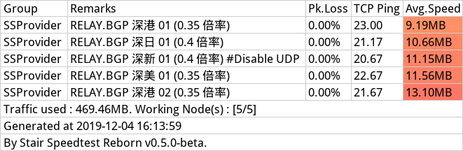
via N3RO BGP（非IPLC节点）机场节点测速（100兆小水管跑满了！）；
I. 主理人说
2.请勿频繁对节点进行测速，避免对节点造成大量负担，影响正常使用。
via StairSpeedTest 项目作者；
节点测速六要素
如何检测SS/SSR/V2ray/等机场节点的质量？测速看看，看延迟/上行/下行/丢包/抖动等等；
1.节点所用服务器总带宽
2.本地运营商QoS
3.你的本地带宽
4.早中晚高峰拥挤程度
5.其他不稳定因素（逢年过节开会什么的
6.机场套餐限速
II. Stairspeedtest-reborn 介绍及下载地址
机场节点批量测速软件，其实之前有一个特别的项目：NyanChanMeow的 SSRSpeed（现在还有）；本文着重介绍的是：TindyX的 StairSpeedTest，易上手，官方使用说明较齐全；
两个作者互相认识的（指线上）；
项目介绍
Stairspeedtest-reborn //
This is a C++ remake version of the original Stair Speedtest script. Despite its similarity to the script verion, this remake version works much more effectively, with faster node parsing, result picture rendering and even cross-platform support.
项目地址及下载
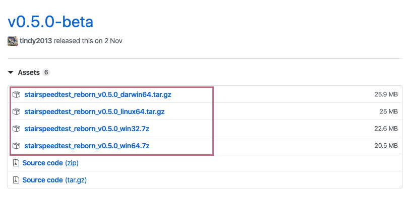
Github 项目地址：https://github.com/tindy2013/stairspeedtest-reborn
Special Thanks
@NyanChanMeow for the original script SSRSpeed
@CareyWong for Web GUI design
@ang830715 for MacOS support
...and a lot of people who have helped me during the testing phase!
III. 配置文件设置（pref.ini，彩虹图，按速度大小排序等）
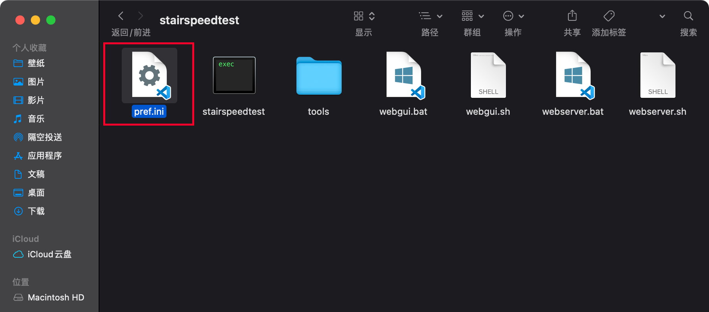
节点排序：以最快速率为优先排序；
是否导出最大速率：是；
[common]
exclude_remarks0=(剩余流量|到期时间|过期时间|官网地址|产品名称)
[advanced]
speedtest_mode=all
test_site_ping=true
test_upload=false
test_nat_type=true
preferred_ss_client=ss-libev
preferred_ssr_client=ssr-libev
;Multi-thread speedtest thread count
thread_count=4
[export]
export_with_maxspeed=true
#是否导出最大速度，ture；
export_sort_method=rspeed
#节点排序：rspeed，倒序，速度越快排越前；
;Export all nodes into one image when testing multiple links instead of separating different links into individual pictures
multilink_export_as_one_image=true
;Force single links to export an image
single_test_force_export=true
;Export as the newest style (SSRSpeed 2.5+)
export_as_new_style=true
;recognized value: original, rainbow, custom
export_color_style=rainbow
#导出测速图的颜色模式：rainbow，彩虹图；IV. SSRSpeed for Mac 批量测速教程
如果你不会使用 Mac 的终端，则可参考以下学习资料进行学习了解；
如果之前有使用过服务器建站，或者搭建过SS/V2ray/SSR等，这会是一个超级易懂的指南；只需运行下解压包下的脚本即可加载本地测速服务（默认为 127.0.0.1:10870 ）；
第一步 下载并运行shell脚本
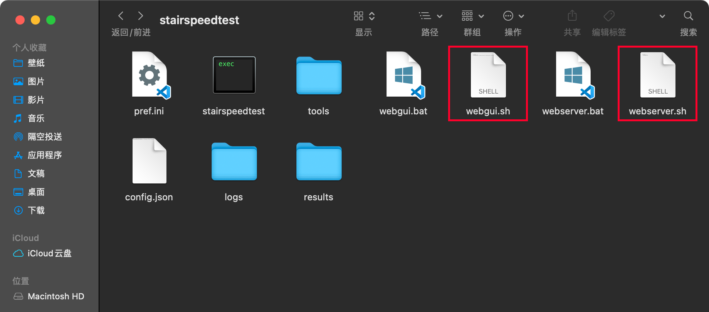
0.进入StairSpeedTest的 releases 发布页面；
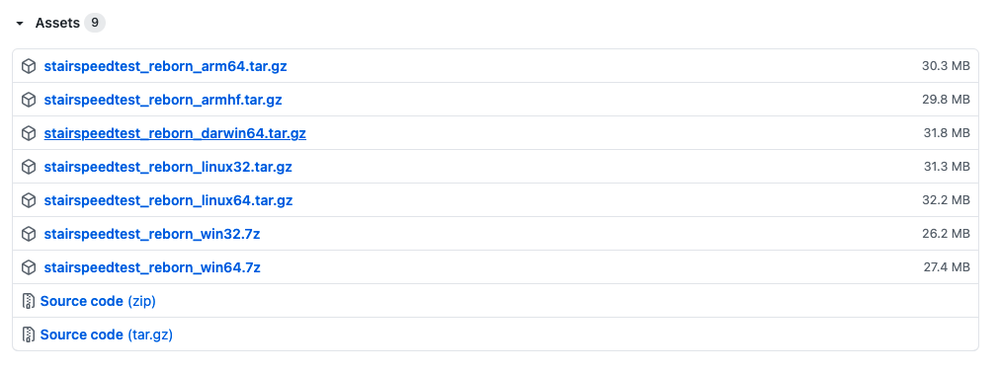
1.找到并下载stairspeedtest_reborn_darwin64.tar.gz压缩包，解压，解压后得到一个文件夹stairspeedtest；（Mac端压缩包的后缀名是darwin.tar.gz）
2.此时打开Mac终端app，输入命令cd ，再按一下空格空格，尔后将解压后的文件夹直接拖拽至终端（参考下图所示）；
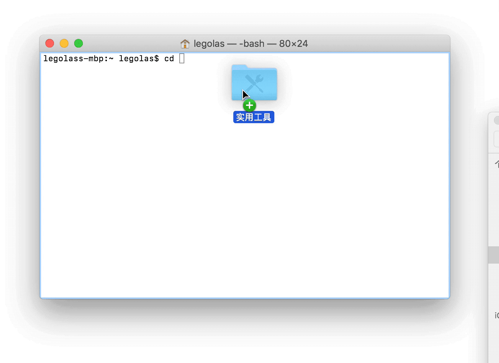
3.按回车，即可在终端进入解压后的文件夹：stairspeedtest（举例）；
4.运行 ./webserver.sh 命令；
julia$ cd stairspeedtest #进入解压后的文件夹
julia$ ls #查看该文件夹下有什么文件
config.json pref.ini stairspeedtest webgui.sh
logs results tools webserver.sh
julia$ sudo bash webserver.sh #以sudo身份运行 webserver.sh
Stair Speedtest v0.7.1 Web server running @ http://127.0.0.1:108705.根据上一步的运行结果，复制并在浏览器中打开 http://127.0.0.1:10870(以实际运行结果为准，默认为http://127.0.0.1:10870)；
6.*此时终端不能关；


julia$ cd stairspeedtest #进入解压后的文件夹
julia$ ls #查看该文件夹下有什么文件
config.json pref.ini stairspeedtest webgui.sh
logs results tools webserver.sh
julia$ ./stairspeedtest #运行 stairspeedtest 文件
Welcome to Stair Speedtest v0.7.1!
Which stair do you want to test today? (Supports single Shadowsocks/ShadowsocksD/ShadowsocksR/V2Ray link and their subscribe links)
If you want to test more than one link, separate them with '|'.
Link: #此处输入机场订阅链接
Found subscribe link.
If you have imported an V2Ray subscribe link which doesn't contain a Group Name, you can specify a custom name below.
If you have imported an Shadowsocks/ShadowsocksR link which contains a Group Name, press Enter to skip.
Custom Group Name: #此处输入自定义名称或机场名称即可第二步 开始测速及权限设置
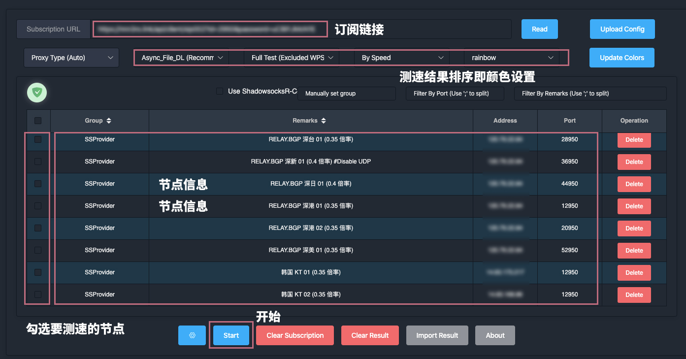
0.如上图，在浏览器中打开http://127.0.0.1:10870；填写你的机场订阅(Subscription)链接，点击read按钮对机场节点进行读取，尔后从读取列表中选择需要测速的机场节点，选定之后，最后点击Start按钮开始进行测速；
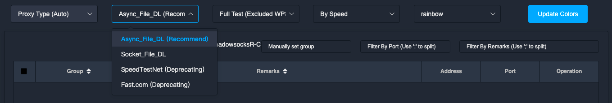
1.期间Mac会有很多安全提醒，例如未经认证的开发者，移除至废纸篓等；
2.打开Mac的系统偏好设置-安全性与隐私-选择仍然打开；
3.权限全部允许后，尽情测速吧；
第三步 查看机场测速结果
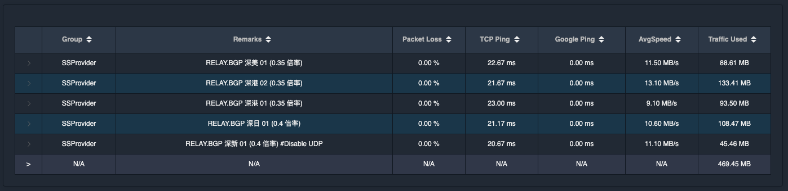
网页展示结果；
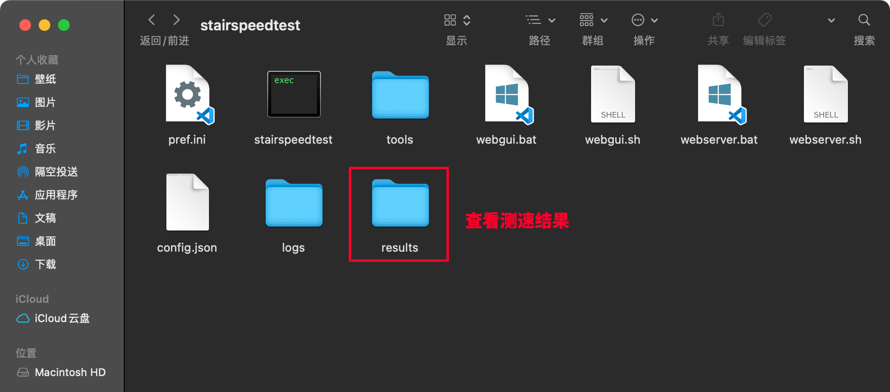
最终测速结果将会生成图片并导出在results文件夹下；
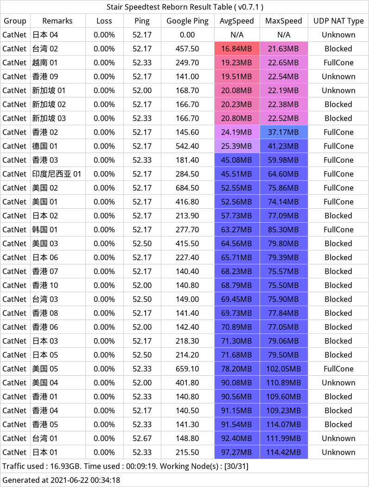
via Catnet；
V. Faq 无法打开“...”，因为无法验证开发者。
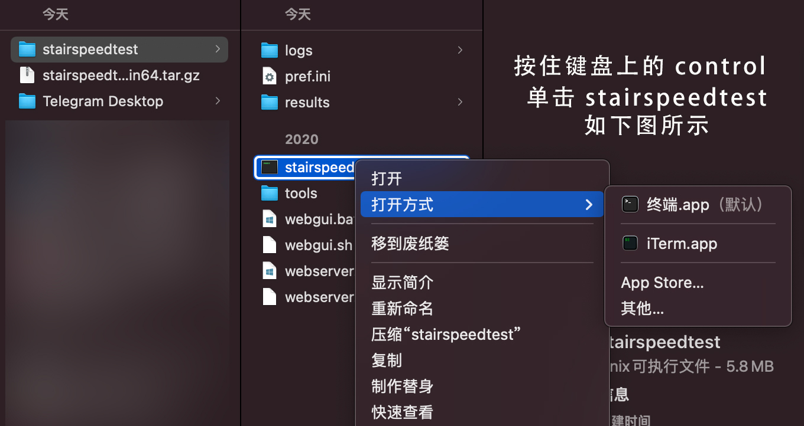
更多解决方案参考：打开来自身份不明开发者的 Mac App；
VI. SSRSpeed for Linux 批量测速教程
stairspeedtest_reborn_linux64.tar
0.进入 releases 页面下载 stairspeedtest_reborn_linux64.tar.gz或stairspeedtest_reborn_linux32.tar.gz 压缩包；
1.参考 Mac端的用法；
2.个人觉着用 Linux 的小伙伴对shell文件的执行操作不应该有太多疑问...（大雾）；
VII. SSRSpeed for Windows 批量测速教程
0.进入 releases 页面下载 stairspeedtest_reborn_win64.7z或stairspeedtest_reborn_win64_win32.7z 压缩包；
1.没有 Windows 电脑，暂时就不做介绍了；
2.压缩包解压后有.exe 文件如 stairspeedtest.exe；
3.双击 666；
VIII. 在线测速
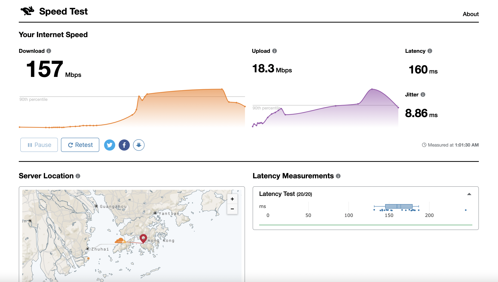
1.https://speed.cloudflare.com/ 由Cloudflare推出的网页在线测速工具，结果极其准确；（毕竟是一家很强的CDN服务商）
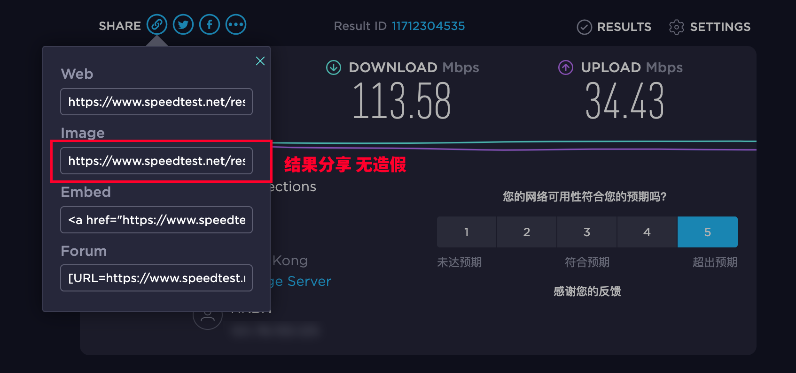
2.https://www.speedtest.net/zh-Hans 提供测速APP/在线测速，支持分享测速结果页面链接；
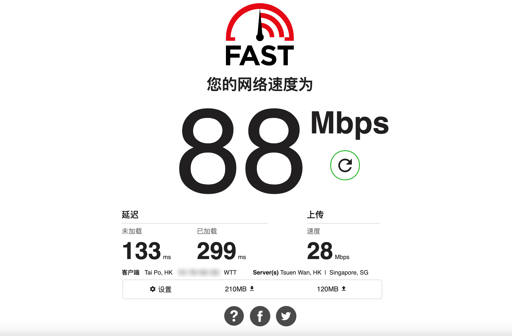
3.https://fast.com/ netflix 出品，测试你的网络带宽；
YouTube 测速
完整参阅：https://t.me/airportbbq/1182；
Speedtest
IX. 工具相关（各类代理软件配置）
X. 机场相关

流媒体解锁适用：全线 KIRONO 落地解锁Netflix；Youtube premium（可后台播放），HBO Max，DAZN，PCR JP；
支持协议：SS协议；
节点特性：AIA专线/Anycast（内网专线稳定不墙/无QoS等级/超低延迟）；
可用状态：可用；
购买建议：月付/季付/半年付/年付均可；
注册地址：Catnet.uk；
常规优惠码：无；
活动优惠码：暂无；
更新时间：2021年7月7日；
CatNet - Via 机场推荐清单；
版权属于：毒奶
联系我们：https://limbopro.com/6.html
毒奶搜索：https://limbopro.com/search.html
毒奶导航：https://limbopro.com/daohang/index.html本文链接：https://limbopro.com/archives/ssrspeed.html
本文采用 CC BY-NC-SA 4.0 许可协议，转载或引用本文时请遵守许可协议，注明出处、不得用于商业用途！